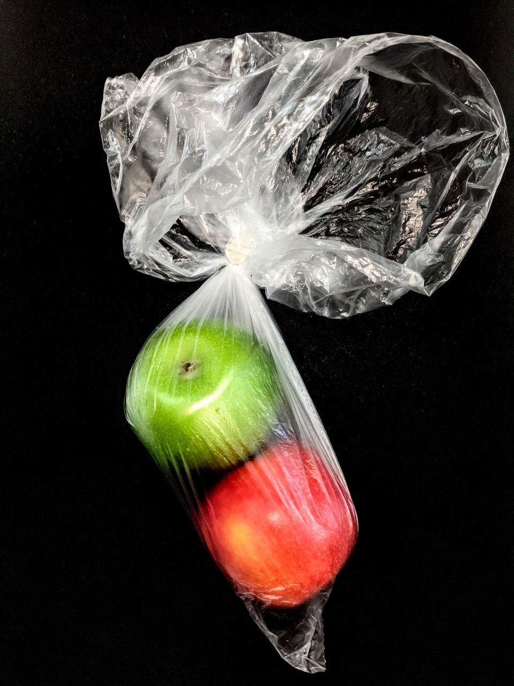
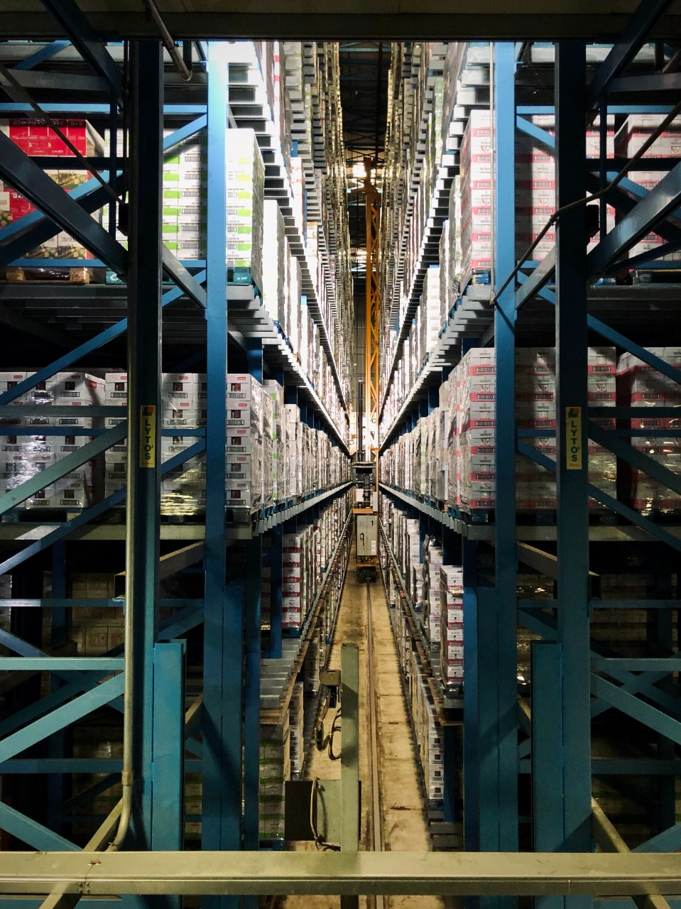

As we can see from the illustration above landfill is mentioned to be the
least preferred form of waste disposal generated by food and beverage producers worldwide. There are
better ways to get rid of the waste by using more effective and profitable ways of waste
management.2 Some of the more sustainable methods of waste management is by making animal feed,
composting to make nutrient rich fertilizer3, anaerobic digestion to produce energy rich biogas4,
recycling or reusing waste for utilization by other industries and feeding the surplus food to
people in need.
As discussed above there are various waste management options that are available and now we are going to have a look at some of them. All the major food manufacturers have the same unique problem, the product which is in access has a short shelf life while most of the waste is organic in nature. The production of food and beverages creates waste5 that can be turned into animal feed and sold to cattle, pig farms etc. There is also waste produced in terms of wastewater which can be reused after treatment. This wastewater sludge is being recycled or reused by top food and beverage manufacturers through land application, anaerobic digestion and composting alternatives. The organic waste that is produced at manufacturing plants can be made into composts in modern in-vessel process and the fertilizer hence produced can be used for in house landscaping or alternatively can be sold at attractive prices as organic fertilizer.
Another sustainable alternative of managing the organic waste at food and beverage manufacturing plants is to degrade it biologically in a digester that is anaerobic in nature which in turn produces biogas which is energy-rich and waste is known as digestate. These products can have various implementations like the biogas can be a good alternative to heating fuel in the plant itself or it can be converted into electricity while the disgestate can be used as a manure. Biogas can also be used after converting it into biomethane6 or Bio CNG which can be used as vehicular fuel.
Items which are not organic like cardboard, clean plastics, metal and paper are commodities which can be sold to the recyclers. Cardboard boxes are the material that is used the most and it can be flattened down into flat pieces and sold to recyclers for attractive prices. Cardboard boxes can also be reused to store materials like packages in the factory which will make the most of these boxes. Packaging on the other hand can be tricky. Major manufacturers of food and beverages use jet shredder waste management technologies which helps to separate film, cartons and food all of which are recycled separately.
Major food and beverage manufacturers are trying to achieve zero waste from their processes. But the question arises how do we achieve zero waste? The best way to go about it is to start small and do what you can. Zero waste programs can be perfected by setting goals and targets set to be achieved in a year. Establishing a core team can be a crucial step in order to find different ways to reduce waste, energy and utilities.
Measurements of different waste streams and
developing a benchmark is the first step in the Zero Waste Program. The primary data once collected
is broken down into numbers and categories according to the previously mentioned EPA’s Food Recovery
Challenge and identification of potential opportunities. The best example can be of inorganic
materials which are categorized based on their end lives reuse, recycle or landfill. Food and
beverage industry can perform waste sorting exercises in order to identify key waste streams.7
Nestle USA Case Study
Nestle USA in spring of 2015, made an announcement that all 23 of its facilities were landfill free.
Nestle USA mentions in its sustainability report that it is constantly trying to look for new
alternatives to reuse, recycle and recover energy. It found in its study that the best ways to do it
were methods like composting, recycling and energy production and the production of safe products as
animal feed while disposing of manufacturing by-products.
Employees also work to minimize by-products and engage in recycling programs and partnerships with
credible waste vendors that dispose of manufacturing by-products in line with Nestlé’s environmental
sustainability guidelines and standards. All Nestlé facilities employ ISO 14001-certified
environmental management systems to minimize their environmental impact.8
1 https://www.epa.gov/sustainable-management-food/food-recovery-hierarchy
2 https://www.bioenergyconsult.com/effective-waste-management/
3 https://www.bioenergyconsult.com/effective-waste-management/
4 https://www.bioenergyconsult.com/significance-of-anaerobic-digestion-of-food-waste/
5 https://www.bioenergyconsult.com/food-waste-to-energy/
6 https://www.bioenergyconsult.com/biomethane-from-food-waste/
7 https://www.bioenergyconsult.com/technologies-to-help-start-up-in-beverage-industry/
8 https://www.nestleusa.com/media/pressreleases/nestl%C3%A9-usa-announces-that-all-23-factories-a
chieve-zero-waste-to-landfill